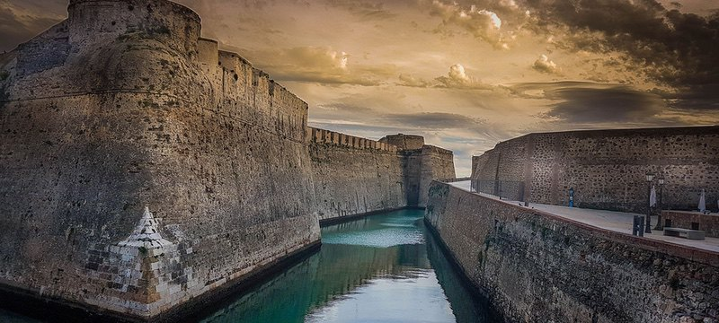
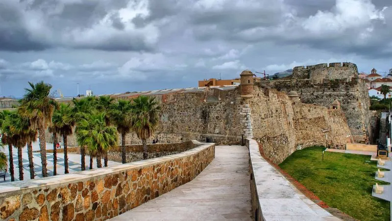
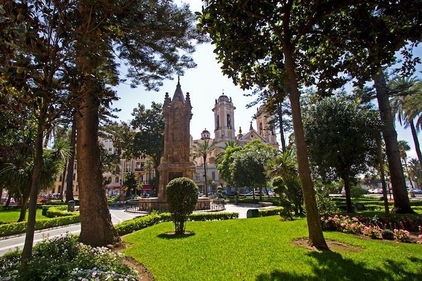

Enlaces

Turismo en Ceuta. Qué ver. Información turística | spain.info
Encuentra información sobre todo lo que puedes hacer en un viaje a Ceuta. Mejores planes, qué visitar, actividades en Ceuta etc | spain.info

Clima Ceuta ☀️ Temperatura 🌡️ Mejor época para viajar 🌦️ Tiempo
Todo sobre el tiempo y clima de Ceuta – Temperatura media • Horas de sol • Probabilidad de lluvias • Pronóstico del tiempo • Mejor época para viajar

Diario de información general de Ceuta
¡Que belleza!,(...). Porque nuestra casa, siempre juega con el viento, charlando con las nubes y la luz. Y de esta manera, deja que el viento cree un vivo lienzo de evidencias de oro